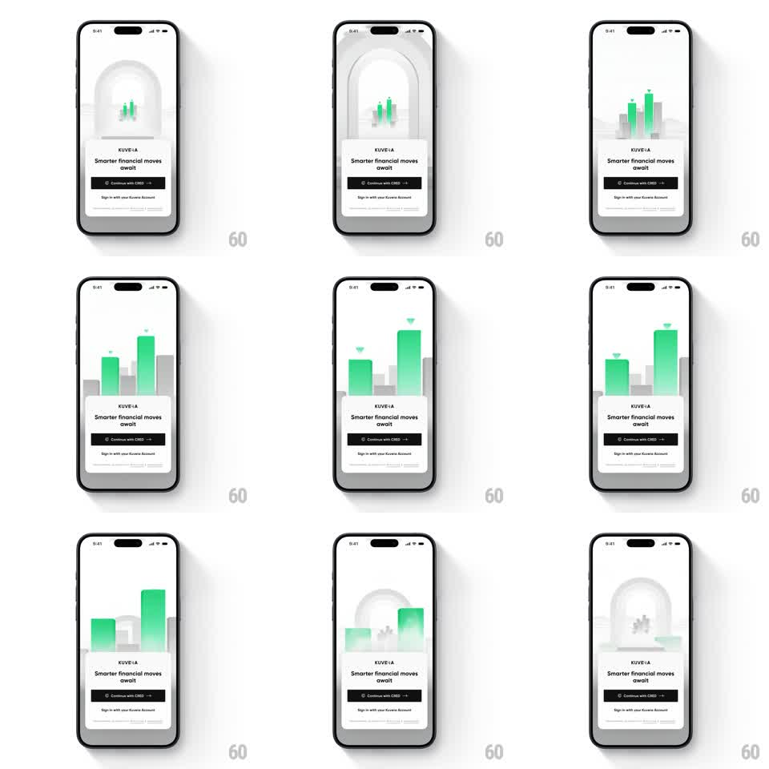

Media
Frame-by-frame

Rebuild this animation 1:1: Kuvera's auth intro - inside a rounded arch window, a small bar chart loops forever: grey and green bars grow and fall like a living portfolio while the sign-in card waits below.

Rebuild this animation 1:1: Kuvera's auth intro - inside a rounded arch window, a small bar chart loops forever: grey and green bars grow and fall like a living portfolio while the sign-in card waits below. ## Integration Integration: stack-agnostic spec - springs given as stiffness/damping, timed motions as duration + curve; map every value to your framework and animation library of choice. ## Scene Kuvera welcome screen, white: an arch-topped rounded window holds the bar chart animation; below it a floating card - "KUVERA" wordmark, "Smarter financial moves await", a black "Continue with CRED" button, and a "Sign in with your Kuvera Account" link. The page background carries a faint grey skyline silhouette. ## Motion spec Pattern: looping bar-chart growth inside an arch window. - ~10 bars: each bar grows from the baseline to its height and shrinks back on independent phases (grow 500ms ease-out, hold 200-800ms, shrink 400ms ease-in), a few key bars in green, the rest light grey. - Small triangle markers pop above the two tallest bars (scale 0 -> 1, 200ms) when they peak, fade when they shrink. - The tallest green bar overshoots slightly (scaleY 1.05 -> 1 settle, spring ~300/16). - The card below is static; only the window animates. ## Calibration - The motion reads as growth, not an equalizer - bars change height smoothly, never jitter frame to frame. - Green is reserved for the leaders; at most 3 green bars at any moment. ## Reduced motion Bars hold at mid-heights; a single slow grow-shrink sweep every 4s. ## Don't miss - Bars are clipped by the arch's rounded top - a bar growing into the curve masks cleanly. - The skyline silhouette behind the bars stays still; depth comes from the bars alone.